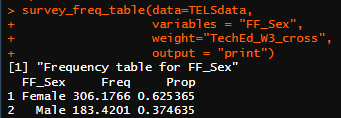

# load packages and custom functions --------------------------------------
source("00_packages_and_functions.R")
# read in data for this script --------------------------------------------
TELSdata <- haven::read_spss("data/TELS_DUMMY_DATA.sav"
#ensures that user-defined missing values in the spss file
# are read into R as NA
# If you want to bring in these codes into analysis (e.g. you might be interested
# in the share who refused) change to TRUE.
, user_na=FALSE)4 Frequency tables
You can use 04_frequency_tables.R as a reference for this section.
This section will cover how to use the custom function survey_freq_table(). This function can be used to create weighted and unweighted frequency tables. It can also be used for one variable or over multiple variables.
WEIGHTS
SPSS calculates weighted results slightly differently to R. SPSS rounds weighted counts to the nearest whole number, and then bases any subsequent statistics off that.
R does not round, so results are slightly more accurate. You may find that results do not exactly match SPSS output (difference of <0.5pp) depending on how your contractor has calculated their weights.
4.1 Load packages, functions and read in data
You need to make sure you load the required packages and custom functions if you haven’t already. You also need to read in the required data for this script.
Even if you read in the data before, we recommend you re-run this code so that you’re working with a data set without any alterations you may have done to it in previous scripts.
Run the code
Run the code below in the corresponding script in your project.
Outputs
All the functions on this page have three modes of output:
NULL: save table to the environment - single variables only"print": results will be printed in the console - single and multiple variables"download": save as an Excel sheet in the working directory - single and multiple variables
NOTE: if you use a function to download multiple tables without using table_name to specify different table names for your outputs then your table will be overwritten every time you download it.
4.2 survey_freq_table()
This section will cover how to use the custom function survey_freq_table(). The frequency tables produced by this function will contain the following columns:
A column with the name of the variable you want the frequency table for
- The column will list the categories available in your variable
Freq - Frequency of each category in your variable
Prop - The proportion of each category in your variable
For example, if we have a data set with males and females as categories in a variable called sex, frequency tells us the number of times they appear in the data. Proportion tells us the fraction of the total that each category represents. Therefore, if there are 60 males and 40 females in the data, then those numbers will be reflected in the table generated by survey_freq_table() in the frequency column. The proportion of males would be 0.6, and the proportion of females would be 0.4.
4.2.1 Weighted frequency tables
Single variable
You can use survey_freq_table() for a single variable (column). This means that the function will create a table based on that variable alone. The table generated this way can be saved to the environment, printed or downloaded as an Excel document.
We will create a weighted frequency table for FF_Sex using survey_freq_table() below.
Run the code
Run the code below in the corresponding script in your project. If you are starting from this point in the guide, remember to run lines from the top of the script to read in the data and reload the packages and custom functions.
#save to environment - single var only
sex_freq_table <- survey_freq_table(data=TELSdata,
variables = "FF_Sex",
weight="TechEd_W3_cross")
#print
survey_freq_table(data=TELSdata,
variables = "FF_Sex",
weight="TechEd_W3_cross",
output = "print")
#download
survey_freq_table(data=TELSdata,
variables = "FF_Sex",
weight="TechEd_W3_cross",
output = "download")After you run the code above, you will see output in the console similar to the image below. This shows a frequency table. You will find that same frequency table downloaded in your R project folder and saved in your environment under sex_freq_table.

Multiple variables
You can use survey_freq_table() for multiple variables at once. This means that the function will iterate itself over multiple columns you specify within the data so that you do not need to write the function multiple times for multiple columns in the same data. The only thing you need to consider is that the tables generated this way can only be printed or downloaded as an Excel document.
We will create a weighted frequency table for FF_Sex, DV_Ethnicity, SEN_DV, WrkStud, and NextStepStudyGeneralField using survey_freq_table() below.
Run the code
Run the code below in the corresponding script in your project. If you are starting from this point in the guide, remember to run lines from the top of the script to read in the data and reload the packages and custom functions.
# List of variables
vars <- c("FF_Sex", "DV_Ethnicity", "SEN_DV", "WrkStud", "NextStepStudyGeneralField")
#print
survey_freq_table(data=TELSdata,
variables = vars,
weight="TechEd_W3_cross",
output = "print")
#download
survey_freq_table(data=TELSdata,
variables = vars,
weight="TechEd_W3_cross",
output = "download")4.3 unweighted data
To create unweighted frequency tables for your data, omit the specification of the weight parameter in the survey_freq_table() function.
Optional - Find out how we create unweighted frequency tables
When you don’t specify the weight parameter, it automatically becomes assigned NULL. This prompts survey_freq_table() to create an artificial weight set to 1 (i.e. every case is treated equally) and use that instead.
The example below shows how to create unweighted frequency tables using survey_freq_table() for WrkStud.
Run the code
Run the code below in the corresponding script in your project. If you are starting from this point in the guide, remember to run lines from the top of the script to read in the data and reload the packages and custom functions.
# This creates an unweighted frequency table for the variable 'WrkStud
survey_freq_table(data=TELSdata,
variables = "WrkStud",
output = "print")4.4 Combine the learning
It’s important to bear in mind that the code in this guide can be combined to make your analysis more suitable to your needs.
In the example below we will create a frequency table but for males only. We will combine our code for filtering and creating frequency tables using survey_freq_table() for this.
Run the code
Run the code below in the corresponding script in your project. If you are starting from this point in the guide, remember to run lines from the top of the script to read in the data and reload the packages and custom functions.
# create a new dataset of males
TELSdata_male <- TELSdata %>%
filter(FF_Sex==2)
#freq table for the filtered dataset we just created.
survey_freq_table(TELSdata_male,
variables="WrkStud",
weight="TechEd_W3_cross",
output = "print")